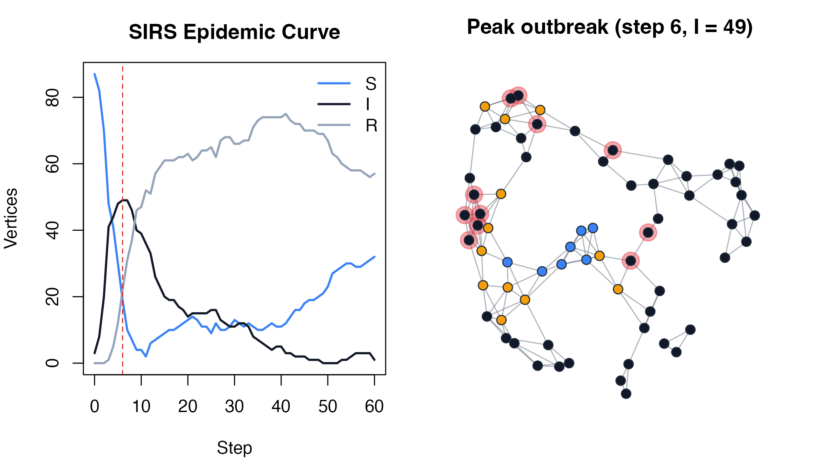
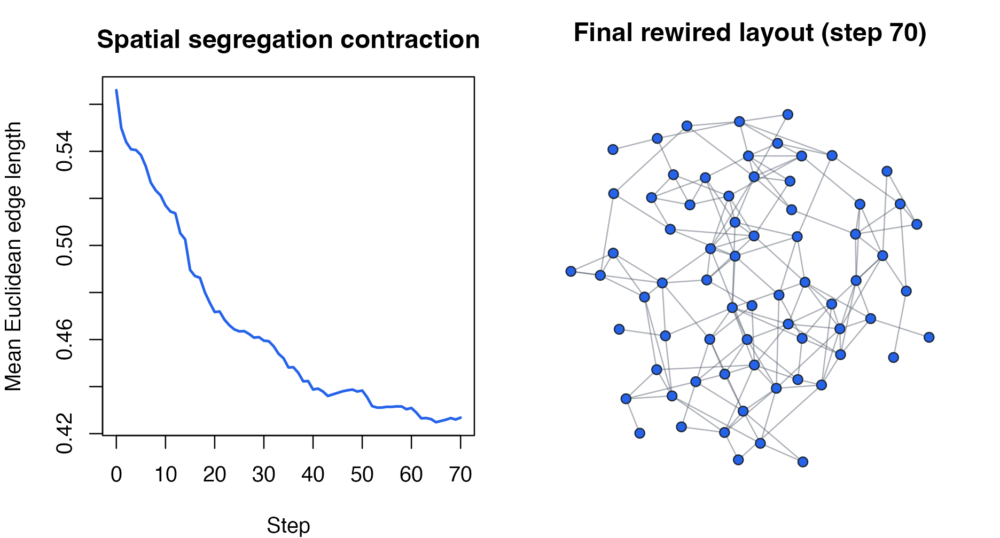
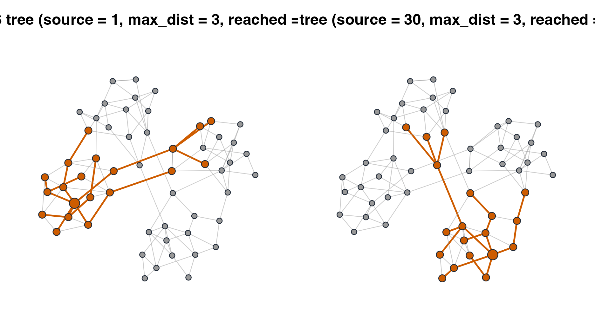
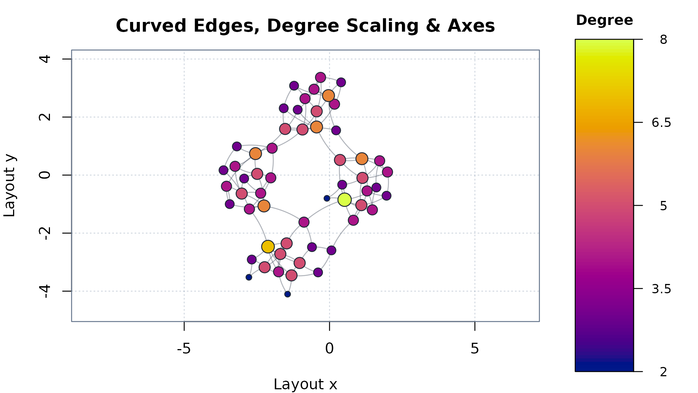
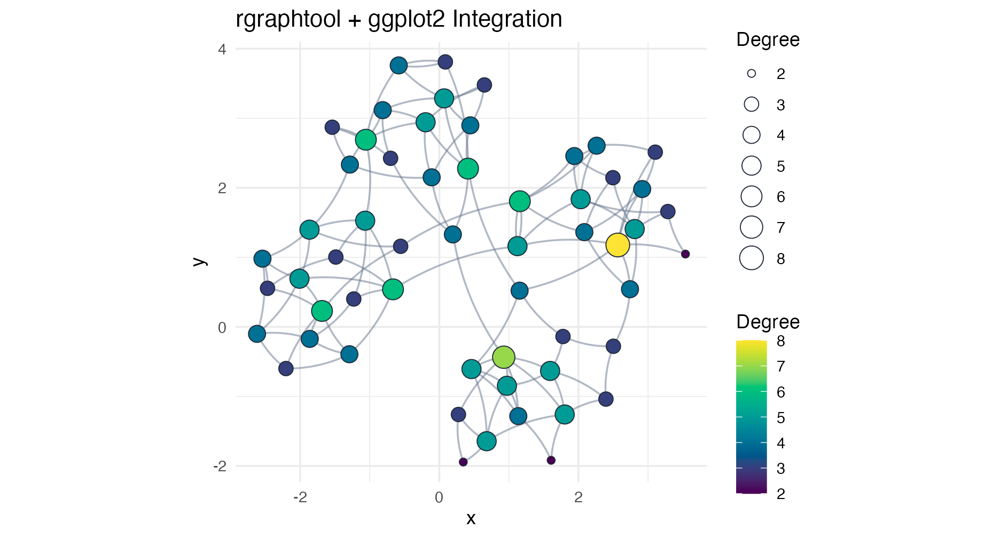
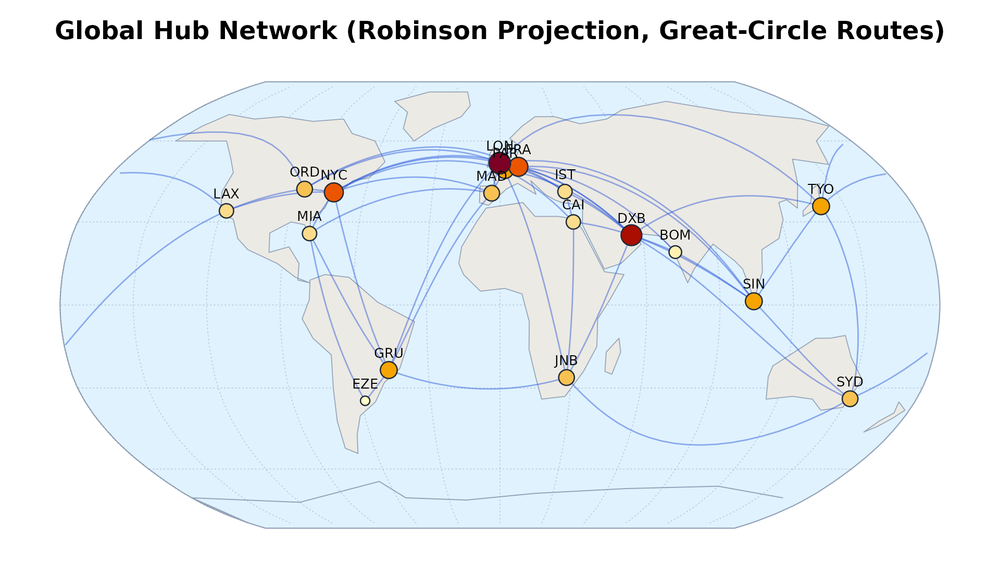

Layouts, Animations, Plotting Integration & Geographic Maps
Source:vignettes/visualization-and-animation.Rmd
visualization-and-animation.RmdThis article brings together five visualization demos
(animation_sirs, animation_dynamic_layout,
interactive_bfs, plotting_integration, and
plotting_map), showing how rgraphtool delivers
force-directed layouts, interactive HTML5 Canvas animations,
grid/ggplot2 integration, vector and raster
export, and offline geographic network maps with zero Python or GIS
dependencies.
1. SIRS epidemic waves & fear-state animation
animate_sirs() runs asynchronous random-order SIRS
updates natively in C++, supporting recovered-vertex hiding
(hide_recovered = TRUE), red halos on newly infected nodes,
and a susceptible-near-infected “fear” visual state
(fear_state = TRUE). Pass mode = "html" (with
open = TRUE interactively) for a self-contained HTML5
Canvas animation player, or mode = "frames" to export
numbered PNG frames.
set.seed(42)
n <- 90L
pts <- cbind(x = stats::runif(n), y = stats::runif(n))
dmat <- as.matrix(stats::dist(pts))
diag(dmat) <- Inf
edge_pairs <- unique(do.call(rbind, lapply(seq_len(n), function(i) {
nbrs <- order(dmat[i, ])[seq_len(5L)]
cbind(pmin(i, nbrs), pmax(i, nbrs))
})))
g_sirs <- graph_add_edges(graph_create(n, directed = FALSE), edge_pairs)
pos_sirs <- sfdp_layout(g_sirs, pos = pts, K = 0.25, max_iter = 60L)
init_s <- integer(n)
init_s[c(1L, 30L, 60L)] <- 1L
anim <- animate_sirs(
g_sirs, pos = pos_sirs, n_steps = 60L,
x = 0.002, r = 0.12, s = 0.02,
init_state = init_s, hide_recovered = TRUE, fear_state = TRUE,
mode = "html", output = tempfile(fileext = ".html")
)
print(anim)
#> rgraphtool SIRS epidemic animation
#> vertices: 90 | frames: 61 (steps = 60)
#> rates: x = 0.002, r = 0.12, s = 0.02 | hide_recovered = TRUE | fear_state = TRUE
#> peak infected: 49 | total new infections: 113
#> mode: html -> /var/folders/ph/fmqmjzln2h15bm5bstsgpng80000gn/T//RtmproOwVJ/file173bf4e3f6a6a.html
# Render an epidemic curve alongside a mid-outbreak snapshot
peak_t <- which.max(anim$counts[, "I"])
st_p <- anim$states[, peak_t]
v_col <- ifelse(st_p == 1L, "#111827", ifelse(st_p == 2L, "#CBD5E1", "#3B82F6"))
v_col[anim$fear[, peak_t] & st_p == 0L] <- "#F59E0B"
old_par <- graphics::par(mfrow = c(1L, 2L), mar = c(4, 4, 3, 1))
graphics::matplot(0:60, anim$counts, type = "l", lwd = 2, lty = 1,
col = c("#3B82F6", "#111827", "#94A3B8"),
xlab = "Step", ylab = "Vertices", main = "SIRS Epidemic Curve")
graphics::abline(v = peak_t - 1L, lty = 2, col = "#DC2626")
graphics::legend("topright", legend = c("S", "I", "R"),
col = c("#3B82F6", "#111827", "#94A3B8"), lwd = 2, bty = "n")
plot_graph(g_sirs, pos = pos_sirs, vertex_color = v_col,
vertex_halo = anim$newly_infected[, peak_t],
vertex_visible = st_p != 2L,
main = sprintf("Peak outbreak (step %d, I = %d)",
peak_t - 1L, anim$counts[peak_t, "I"]))
graphics::par(old_par)2. Dynamic force-directed layout & spatial segregation
animate_dynamic_layout() alternates incremental
sfdp_layout(..., max_iter = 1L) updates with
distance-shortening edge rewirings natively in C++, preserving edge
count and connectivity while self-organizing into spatially localized
clusters.
set.seed(2026)
n_d <- 70L
ring <- cbind(seq_len(n_d), c(seq_len(n_d - 1L) + 1L, 1L))
chords <- cbind(sample.int(n_d, 100L, replace = TRUE),
sample.int(n_d, 100L, replace = TRUE))
chords <- chords[chords[, 1L] != chords[, 2L], , drop = FALSE]
g_dyn <- graph_add_edges(
graph_create(n_d, directed = FALSE),
unique(rbind(ring, cbind(pmin(chords[, 1L], chords[, 2L]),
pmax(chords[, 1L], chords[, 2L]))))
)
pos0 <- sfdp_layout(g_dyn, K = 0.5, max_iter = 60L)
dyn <- animate_dynamic_layout(
g_dyn, pos = pos0, n_steps = 70L, K = 0.5, step = 0.005, n_rewire = 25L,
mode = "none"
)
print(dyn)
#> rgraphtool dynamic layout animation
#> vertices: 70 | edges: 165 | frames: 71
#> mean edge length: 0.5660 -> 0.4268 | total rewirings: 136
#> mode: none
old_par <- graphics::par(mfrow = c(1L, 2L), mar = c(4, 4, 3, 1))
graphics::plot(0:70, dyn$mean_edge_length, type = "l", lwd = 2, col = "#2563EB",
xlab = "Step", ylab = "Mean Euclidean edge length",
main = "Spatial segregation contraction")
g_end <- graph_add_edges(graph_create(n_d, directed = FALSE), dyn$edges[[71L]])
plot_graph(g_end, pos = dyn$positions[[71L]], vertex_color = "#2563EB",
vertex_size = 1.0, main = "Final rewired layout (step 70)")
graphics::par(old_par)3. Interactive BFS shortest-path tree explorer
interactive_bfs() generates an interactive HTML5 Canvas
explorer (mode = "html", hover or click any vertex to
highlight its depth-\(d\) BFS tree), a
base-R click loop (mode = "locator"), or multi-root static
snapshots (mode = "snapshot").
set.seed(7)
n_grp <- 4L
gsz <- 14L
n_bfs <- n_grp * gsz
grp <- rep(seq_len(n_grp), each = gsz)
el_b <- list()
for (k in seq_len(n_grp)) {
nd <- which(grp == k)
el_b[[length(el_b) + 1L]] <- cbind(nd, c(nd[-1L], nd[1L]))
for (i in seq_len(gsz - 1L)) {
for (j in (i + 1L):gsz) {
if (stats::runif(1L) < 0.22) el_b[[length(el_b) + 1L]] <- cbind(nd[i], nd[j])
}
}
k2 <- if (k < n_grp) k + 1L else 1L
el_b[[length(el_b) + 1L]] <- cbind(sample(nd, 2L), sample(which(grp == k2), 2L))
}
g_bfs <- graph_add_edges(graph_create(n_bfs, directed = FALSE), unique(do.call(rbind, el_b)))
pos_bfs <- sfdp_layout(g_bfs, groups = grp, mu = 0.35, max_iter = 80L)
interactive_bfs(g_bfs, pos = pos_bfs, source = c(1L, 30L), max_dist = 3L,
mode = "snapshot", main = "BFS tree")
#> rgraphtool interactive BFS visualization
#> mode: snapshot
#> rgraphtool BFS traversal
#> source: 30 (undirected, max_dist = 3)
#> reached: 19 / 56 vertices (max distance = 3, tree edges = 18)4. Multi-panel plotting, colorbars, grid grobs, and
ggplot2
prop_to_size(), map_colors(),
plot_colorbar(), save_graph_plot(),
graph_grob(), and ggplot_graph() integrate
rgraphtool into base R, grid, and
ggplot2 figures with vector (PDF, SVG, EPS) and raster
(PNG, JPEG, TIFF) export.
deg <- graph_degree(g_bfs)
vcol <- map_colors(deg, palette = "Plasma")
vsiz <- prop_to_size(deg, mi = 0.85, ma = 2.0, power = 0.5)
graphics::layout(matrix(c(1L, 2L), nrow = 1L), widths = c(4.5, 1.1))
plot_graph(g_bfs, pos = pos_bfs, vertex_color = vcol, vertex_size = vsiz,
vorder = deg, edge_curve = 0.12, axes = TRUE, grid_lines = TRUE,
xlab = "Layout x", ylab = "Layout y",
main = "Curved Edges, Degree Scaling & Axes")
plot_colorbar(vcol, title = "Degree")
graphics::layout(1L)
if (requireNamespace("ggplot2", quietly = TRUE)) {
ggplot_graph(
g_bfs, pos = pos_bfs,
vertex_color = deg, vertex_size = deg,
edge_curve = 0.12, axes = TRUE, palette = "Viridis",
color_label = "Degree", size_label = "Degree",
main = "rgraphtool + ggplot2 Integration"
)
}
5. Offline geographic network maps
plot_graph_map() projects spatial networks onto built-in
offline world coastlines using Robinson, Mercator, equirectangular,
Mollweide, or orthographic projections with spherical great-circle
geodesic arcs that split cleanly across the antimeridian.
cities <- data.frame(
code = c("NYC", "LAX", "ORD", "MIA", "GRU", "EZE",
"LON", "PAR", "FRA", "MAD", "IST", "CAI",
"JNB", "DXB", "BOM", "SIN", "TYO", "SYD"),
lon = c(-74.0, -118.2, -87.6, -80.2, -46.6, -58.4,
-0.1, 2.35, 8.68, -3.70, 28.98, 31.24,
28.05, 55.27, 72.88, 103.82, 139.69, 151.21),
lat = c( 40.7, 34.0, 41.9, 25.8, -23.5, -34.6,
51.5, 48.9, 50.1, 40.4, 41.0, 30.0,
-26.2, 25.2, 19.1, 1.35, 35.68, -33.87),
stringsAsFactors = FALSE
)
routes <- rbind(
c(1, 2), c(1, 3), c(1, 4), c(1, 5), c(1, 7), c(1, 8), c(1, 9), c(1, 10),
c(2, 3), c(2, 17), c(2, 18), c(3, 7), c(3, 9), c(3, 17),
c(4, 5), c(4, 6), c(4, 10), c(5, 6), c(5, 7), c(5, 10), c(5, 13),
c(7, 8), c(7, 9), c(7, 10), c(7, 11), c(7, 13), c(7, 14), c(7, 16), c(7, 17),
c(8, 9), c(8, 10), c(8, 12), c(8, 14), c(9, 11), c(9, 14), c(9, 15), c(9, 16),
c(11, 12), c(11, 14), c(12, 13), c(12, 14), c(13, 14), c(13, 18),
c(14, 15), c(14, 16), c(14, 17), c(14, 18),
c(15, 16), c(16, 17), c(16, 18), c(17, 18)
)
g_air <- graph_add_edges(graph_create(nrow(cities), directed = FALSE), routes)
air_deg <- graph_degree(g_air)
plot_graph_map(
g_air, lon = cities$lon, lat = cities$lat,
projection = "robinson", geodesic = TRUE,
vertex_color = map_colors(air_deg, palette = "YlOrRd", rev = TRUE),
vertex_size = prop_to_size(air_deg, mi = 1.0, ma = 2.3, power = 0.6),
vorder = air_deg,
vertex_label = cities$code, vertex_label_cex = 0.65,
edge_color = grDevices::adjustcolor("#1D4ED8", 0.45),
main = "Global Hub Network (Robinson Projection, Great-Circle Routes)"
)